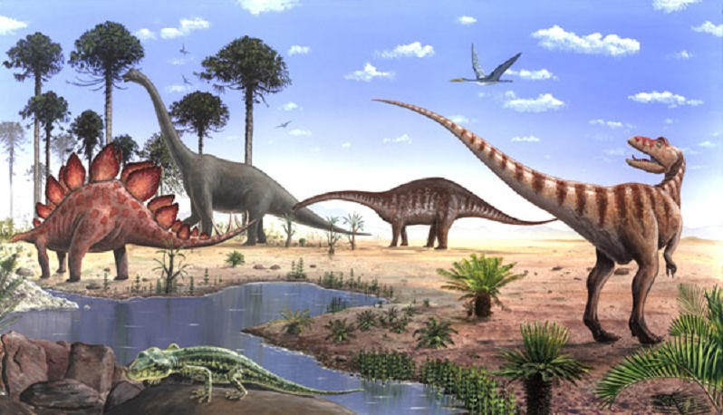

El Jurásico es el segundo sistema y período del Mesozoico en la escala temporal geológica. Sucede al Triásico y precede al Cretácico. Duró unos 58 millones de años, comenzando hace 201 millones de años y acabando hace 143 millones de años. Debe su nombre a la cadena montañosa del Jura, en los Alpes, lugar donde el geólogo prusiano Alexander von Humboldt identificó este sistema en 1795. Refiriéndose a esos mismos terrenos del Jura, el término Jurásico fue acuñado por primera vez en 1829 por el naturalista francés, Alexandre Brongniart en su obra Tableau des terrains qui composent l'écorce du globe ou essai sur la structure de la partie connue de la terre (Descripción de los terrenos que constituyen la corteza de la Tierra o ensayo sobre la estructura de la parte conocida de la Tierra).
Este período se caracteriza por la hegemonía de los grandes dinosaurios y por la escisión de Pangea en los continentes Laurasia y Gondwana. De este último se escindió Australia (en el Jurásico superior y principios de Cretácico), del mismo modo que Laurasia se dividió en Norteamérica y Eurasia.
Son comunes gimnospermas (especialmente coníferas, Bennettitales y cicadas) y helechos. Muchos tipos de dinosaurios, como saurópodos, carnosaurios, y estegosaurios. Los mamíferos son comunes pero pequeños. Primeras aves y lagartos. Ictiosaurios y plesiosaurios se diversifican. Bivalvos, ammonites y belemnites abundan. Los erizos de mar son muy comunes, junto con crinoides, estrellas de mar, esponjas, y braquiópodos terebratúlidos y rinconélidos. Ruptura de Pangea en Gondwana y Laurasia.
El Jurásico se divide en Inferior, Medio y Superior, también conocidos en Europa como Lias, Dogger y Malm, términos hoy obsoletos.